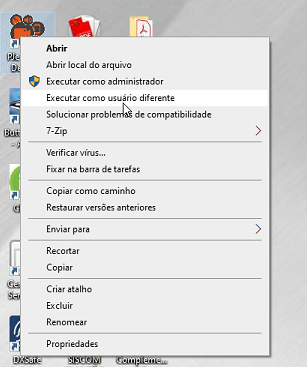
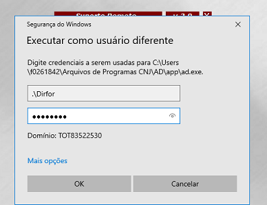

Execução de teste
O procedimento pode ser realizado de duas formas:
- Executando o aplicativo diretamente com o usuário DIRFOR;  
- Criando um atalho na Área de Trabalho do usuário, configurado para execução via RunAs (Recomendado):
Passos para criar o atalho:
- Clique com o botão direito na Área de Trabalho e selecione Novo > Atalho.
- Em “Digite o local do item:” insira o comando abaixo:

C:\Windows\System32\runas.exe /savecred /user:dirfor "C:\Users\GVSTJMG\Arquivos de Programas CNJ\AD\app\ad.exe" OU C:\Windows\System32\runas.exe /savecred /user:tjmg\field225 "%userprofile%\Arquivos de Programas CNJ\AD\app\ad.exe"